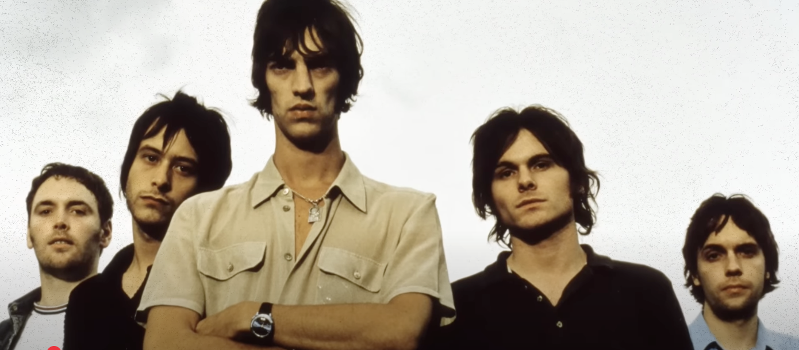
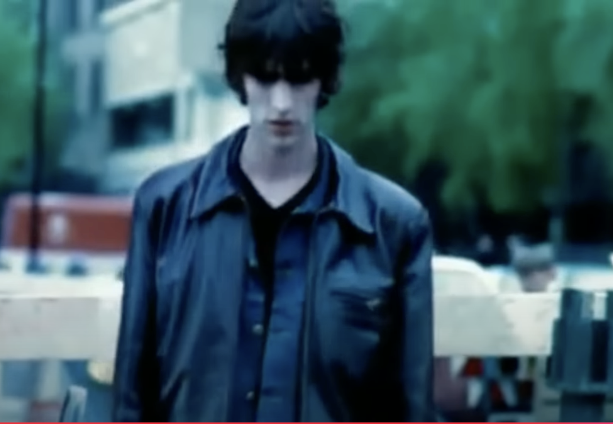
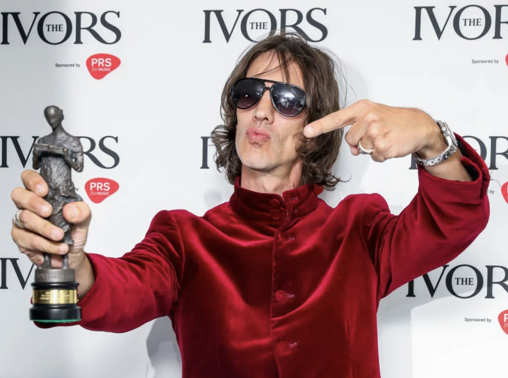
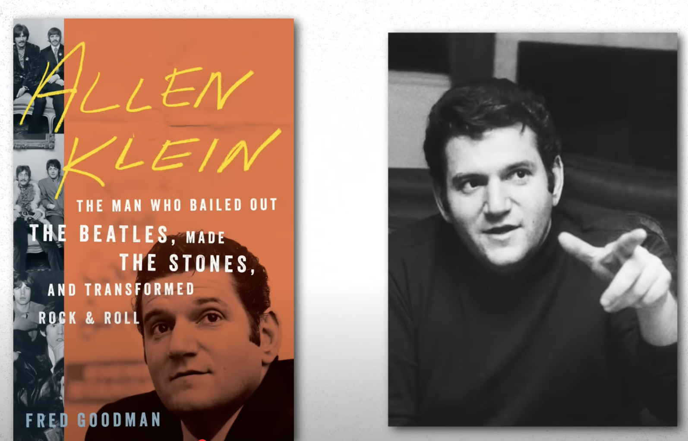

For this assignment I will be discussing the Verve vs Rolling Stones lawsuit regarding the former band’s hit song “Bitter Sweet Symphony.” This track sampled an orchestral rendition of the Rolling Stones’s “The Last Time,” and while an agreement was reached in regards to the sample’s use, a discrepancy arising from the terms of use would ultimately lead the Verve to miss out on their song’s royalties. While these royalties have since been returned to the Verve, this lawsuit and its repercussions have caused the band to endure a tremendous monetary loss for 22 years. However, this case highlights the complexities behind sample clearance and licensing, and serves as a cautionary tale for any artist seeking to license samples from established, bigger-name artists.
In 1997, the Verve sought permission to sample a short string snippet from the Andrew Oldham Orchestra’s 1965 symphonic version of “The Last Time”. While the Verve was granted a license by Decca records (the label behind Oldham’s orchestral cover) to use the sample, they couldn’t release "Bitter Sweet Symphony" unless they had permission from ABKCO, which owned the publishing rights to all of the Rolling Stones’s recordings up until 1967. The Verve’s manager, Jazz Summers, did manage to contact ABKCO about the sample but after being denied the publishing clearance, head of EMI records (the label behind the Verve) Ken Berry gets in touch with ABCKO’s founder and former Rolling Stones manager Allen Klein.
By this time, the Verve had already completed their album ‘Urban Hymns’ (from which “Bitter Sweet Symphony” would be the lead single), and Berry plays the full album for Klein. Although Klein wasn’t initially sold on the idea of others sampling the Rolling Stones’s work, he allegedly made an exception due to the band’s difficult position and granted them a license in exchange for a 50/50 split on the song’s royalties.
According to the Verve’s Bassist, Simon Jones, the 50/50 split was mutually agreed upon until Klein and ABCKO saw how well “Bitter Sweet Symphony was performing. Allen Klein would end up filing a plagiarism lawsuit against the Verve for 100 percent of “Bitter Sweet Symphony’s” publishing royalties, claiming that the Verve had used a larger sample of the song than what was initially agreed upon. The Verve, as inexperienced in legalities as many young artists would often be, settled out of court thinking it would be much cheaper than fighting a legal battle against a large publishing company with access to some of the best lawyers and having much higher odds of winning. Not only was ABCKO awarded 100 percent of the song’s publishing royalties, but the songwriting credits for “Bitter Sweet Symphony” were awarded to the Rolling Stones’s Mick Jagger and Keith Richards.
To add insult to injury, Andrew Oldham (the man behind the symphonic version of “The Last Time”) had sued the Verve two years later for $1.7 million in mechanical royalties. Having already found themselves in a tight legal position where everything seemed to be stacked against them, the Verve had to further give up their royalty payments to Oldham as well.
The popularity of "Bitter Sweet Symphony" would go on to generate millions of dollars in royalties, but the Verve wouldn’t see any of it for 22 years after the song’s release. In 2019, Jagger and Richards, along with Allen Klein’s son and the Rolling Stones’s new manager Joyce Smith, went on to return all songwriting credits to the Verve’s lead singer, Richard Ashcroft. It’s interesting to note that while both ASCAP and BMI repertoire searches list Ashcroft as “Bitter Sweet Symphony’s” sole songwriter, ABKCO still holds all of the song’s publishing rights. It seems that Richard Ashcroft’s current managers, Steve Kutner and John Kennedy, are hopeful that that might eventually change, but it is also worth noting that it took Allen Klein’s death in 2009 to facilitate the return of songwriting royalties to Ashcroft-given that Klein’s son assumed charge of ABKCO and nudged Ashcroft’s managers in that direction.
One important thing to note about Richard Ashcroft’s recovery of the songwriting royalties, is that this occurred a year after the introduction of the Music Modernization Act (MMA). The MMA was established in 2018 to facilitate song licensing between songwriters, publishers, and digital streaming services, and one major change it introduced was rate negotiation standard of a willing buyer and willing seller. The idea behind this concept is that the market (streaming services and song licensing owners) will reasonably settle on a royalty rate representative of a song’s value. While in theory this might seem like a good thing going forward for Ashcroft and the Verve, since “Bitter Sweet Symphony” is already cemented as an iconic song everyone knows, the song is now two decades past its prime. You no longer have companies like Nike and a few car makers lining up to use this song in ads and cultural trends have changed substantially, and therefore licensing demand might not be as particularly high for the song as it once used to be. Even though royalty collection might have gotten easier for not only Richard Ashcroft but many other artists, he may not realistically make much from the song going forward. Regardless, it must still be reassuring that any songwriting royalties made, from here to eternity, will be going to him exclusively.
While I do agree that it’s important to clear samples as wisely and thoroughly as possible, I do believe that the Verve and their manager could have largely benefitted from not only obtaining a license from Decca records (and eventually from ABCKO records), but also from seeking direct permission from Andrew Oldham and his orchestral arranger, David Whitaker. Despite the name of the Andrew Oldham Orchestra, Whitaker was the one who arranged the version of “The Last Time’ that the Verve went on to sample. Had the Verve obtained Whitaker’s blessing (or his estate’s blessing), they could have easily had a key figure that would likely have backed them up in the lawsuit-considering that Whitaker received nothing from the royalties that Oldham assumed after his lawsuit. As far as the first lawsuit from Allen Klein, however, I think things would have still been tricky for the Verve. If they were extremely conscious about covering all of their bases, they could have reach out to the Rolling Stones themselves to run the situation by them. But even then, Klein was reported to have held greater control over the Stones’s earlier work, and Mick Jagger and Keith Richards probably wouldn’t have been able to have a larger say in that matter.
Just as he had done with the Beatles and the Rolling Stones back in the day, Allen Klein struck me as a particularly slimy figure while researching this lawsuit. This was particularly because of one detail: he agreed to licensing the sample for 50 percent of the song’s royalties as a sort of generous gesture, it seems predatory for him to ultimately backtrack and sue the Verve for complete control over the song’s earnings. While I get that the corporate music industry has historically been teeming with these sorts of figures, I would advise towards steering clear of sampling anything associated with big-name artists in general. Whether it’s the Beatles or Taylor Swift, that’s already opening up a big can of worms that most artists simply cannot handle.
Sources: